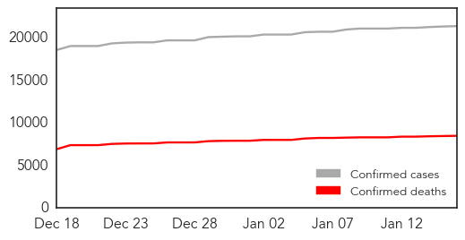

30 Day Trends
Web: 0 alerts, 0 warnings
Twitter: 0 alerts, 0 warnings
1568 new deaths (8468 total)
2804 new cases (21373 total)
Top Articles:
- 1.000
- Red Cross Nurse Dies In Sierra Leone
- 1.000
- Schools in Guinea closed amid Ebola to reopen Monday
- 1.000
- All schools in Guinea that were closed amid Ebola to reopen on Monday
- 1.000
- Suspected UK Ebola case: Patient rushed to hospital after returning from West Africa 'tests negative for deadly virus'
- 1.000
- 8 from Ebola-affected countries quarantined, 7 released – Health Ministry
- 1.000
- Guinea to Reopen Schools as Ebola Cases Decline
- 1.000
- All schools in Guinea that were closed amid Ebola to reopen on Monday
- 1.000
- where we are now and what happens next
- 1.000
- Schools in Guinea closed amid Ebola to reopen Monday
- 1.000
- Chance of Ebola outbreak ending
- 0.999
- Guinea, Sierra Leone aim to be Ebola-free by mid-2015
- 0.999
- Ebola spread slowing
- 0.999
- Ebola fear nurse transferred to UK (From Wiltshire Business Online)
- 0.999
- Ebola outbreak in West Africa appears to be slowing down -U.N.
- 0.999
- Australian nurse evacuated from Sierra Leone after Ebola scare
- 0.999
- Australian nurse evacuated from Sierra Leone after Ebola scare
- 0.999
- Edinburgh hospital woman tests negative for Ebola
- 0.999
- Aussie Ebola nurse rushed to UK after battling deadly disease in Sierra Leone
- 0.999
- Ebola appears to be slowing down - UN - Africa
- 0.999
- UN Ebola czar says epidemic has 'passed the tipping point'
- 0.999
- Australian nurse treating Ebola patients in Sierra Leone airlifted to UK
- 0.999
- MetroHealth designated as Ebola treatment center; only site in Ohio, one of 49 in U.S.
- 0.999
- WHO Ebola emergency committee to meet next week
- 0.999
- Ebola outbreak in West Africa appears to be slowing down, says UN
- 0.999
- Edinburgh patient tests 'negative' for Ebola
- 0.999
- Two Healthcare Workers Transported to UK on Suspicion of Ebola Virus
- 0.999
- Ebola outbreak in West Africa slowing down: UN - '21,200 infected in worst outbreak since March' - Kuwait Times
- 0.998
- Australian nurse evacuated from Sierra Leone after Ebola scare
- 0.998
- Australian Ebola fears nurse airlifted to Britain
- 0.998
- Australian nurse evacuated from Sierra Leone
- 0.998
- Schools in Guinea closed during Ebola outbreak to reopen Monday
- 0.998
- Communicating in a crisis
- 0.998
- Ebola outbreak in West Africa slowing down
- 0.998
- Ebola outbreak in West Africa appears to be slowing down
- 0.998
- Ebola spread slowing in hard-hit countries: WHO
- 0.998
- Ebola – end in sight as crisis passes 'tipping point', says UN virus 'czar'
- 0.998
- Ebola Outbreak in West Africa Slowing Down – UN
- 0.998
- Doctors Without Borders Fighting Malaria and Ebola
- 0.998
- Suspected Ebola victim tests negative for disease in Edinburgh
- 0.998
- Ebola outbreak in West Africa appears to be slowing down: U.N.
- 0.997
- J&J Gets $115M to Push Out Ebola Vaccine Faster
- 0.997
- Ebola Outbreak Points to Tragic Flaws in World's Disease Resilience
- 0.997
- Support affected countries to control Ebola – Health Minister
- 0.997
- Can EHRs power up the fight against epidemics? -- GCN
- 0.996
- Volunteer who had potential contact with Ebola in Sierra Leone being treated at East Surrey Hospital
- 0.996
- Optimism as Ebola outbreak declines:Friday 16 January 2015
- 0.995
- Chembio hopes for speedy trial of rapid Ebola test
- 0.994
- UN: At least 50 Ebola hotspots remain
- 0.994
- UN: At Least 50 Ebola Hotspots Remain, But New Cases Falling
- 0.993
- Social clustering influenced spread of Ebola virus in West Africa
Showing top 50 articles...
Top Tweets:
- 0.917
- Sad to be leaving Liberia today but happy that Ebola cases have plummeted. Back in West Africa in 3-4 weeks to continue treatment trials.
- 0.672
- EbolaNews: @RedCross says nurse has died of Ebola in Sierra Leone becoming the org's first staff member to die there http://t.co/fTCrVthmQS
- 0.645
- [VOA] Ebola Virus Mutated From Forest Encroachment Says Disease Specialist http://t.co/OI25HrIqzE EBOLANEWS
- 0.567
- RT: Ebola in Liberia: Ministry of Health besieged http://t.co/Jyd89kawSl
- 0.535
- [BBC] Ebola crisis: New cases declining in West Africa http://t.co/lKXgzZCL9O EBOLANEWS
- 0.506
- [ALJAZEERA] Ebola outbreak 'slowing down' in West Africa http://t.co/7RudW4TVMd EBOLANEWS
Web/News Articles

Tweets

Human Impact
Article Locations

Article Confidences